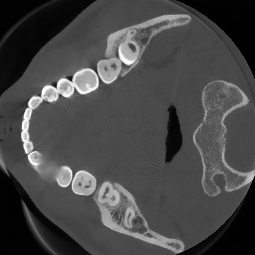
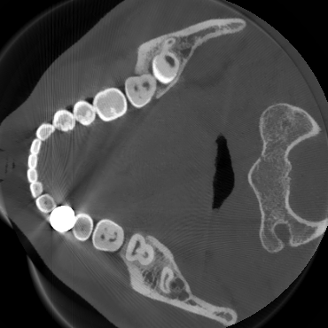

TRACK 01REFERENCE-BASED
Simulated artifacts.
Known references.
→
7,119main-pool pairs across six metal configurations
Plus 52,811 parametric variants. A separate tooth-mask audit covers 3,048 slice–metal pairs from 508 cases.
ANATOMY-AWARE IMAGE EVALUATION
Image quality is more than a score.
CLAIRE evaluates dental CBCT restoration through local anatomy, a clinical rubric, and a traceable record of evidence.
Clinically-Aligned and Auditable Quality Evaluation
for Dental CBCT Reconstruction


Real simulation example · ToothFairy3 · shared display window
Restorations by the selected method. CLAIRE evaluates, rather than restores.
01 / THE EVALUATION GAP
A global quality score can improve while a tooth boundary deteriorates. We call this covert anatomical damage.
CLAIRE makes the questions local: Is the margin traceable? Is the contour intact? Can you still identify the enamel–dentin junction?
AMIFound pairs with BF1 deterioration
beyond the predefined threshold
Joint SSIM–BF1 conflicts:
SSIM increases while BF1 deteriorates
Different events, different rates.
3,048 tooth-masked simulated pairs;
0.25 mm boundary tolerance.
02 / EXPERIENCE THE PROTOCOL
Make your own observations before seeing a precedent. Lock the record, inspect an example, then decide what to keep. Every revision leaves a trace.
Explore the clinical rubric on a simulated example. This walkthrough does not supply expert ground truth or run a model.
CLAIRE-LOCK / OBSERVATION COMMITTED
Your original answers stay locked. The following synthetic teaching cards demonstrate how a precedent can inform a revision; they are not expert patient records or retrieved nearest neighbors.
A revision needs visual evidence. Without it, the locked observation is retained.
| Item | Locked | Final | Decision / evidence |
|---|
Explore the existing atlas, browse demonstration precedents, annotate your own images, and export a local audit record.
03 / CLAIRE-BENCH
Reference-based simulation reveals anatomical damage. Clinical cohorts test agreement with expert item-wise judgments. Their roles and denominators stay distinct.
Plus 52,811 parametric variants. A separate tooth-mask audit covers 3,048 slice–metal pairs from 508 cases.
Agreement is evaluated on valid answers with coverage reported separately. New visitor annotations are not expert ground truth.
7,119 main-pool pairs. Eight sources comprise two public corpora and six anonymized hospital collections.
04 / WHAT THE EVIDENCE SAYS
Local grounding improves item agreement. Observation locking targets retrieval-induced coverage collapse. These are different contributions, not one combined result.
CLAIRE-Lock preserves 99.5% / 97.6% valid coverage, but crown agreement remains below CLAIRE-Loc. A traceable revision can still be wrong.
Real and simulated artifacts remain separable (C2ST AUC > 0.97). Clinical validation remains essential.
Explore the images. Inspect the questions. Follow the evidence.
CLAIRE is an evaluation framework with a training-free core. Optional CLAIRE-Route uses supervised out-of-fold development. This website is a static research demonstration: the slider shows precomputed restorations; the protocol walkthrough uses your inputs and illustrative precedents. The complete clinical library and model inference are not hosted here.
Visual samples: ToothFairy3 public-source simulated examples. Counts and results: the CLAIRE manuscript and frozen experiment records. Clinical hospital images, patient identifiers, API credentials, and the manuscript PDFs are not bundled with this site.
View sample provenance ↗